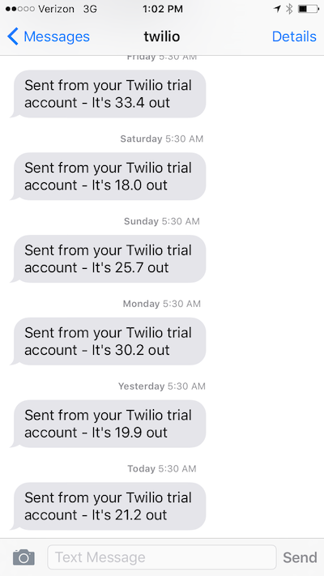

Checkpoint: programming over text
For a while now I've been taken by the idea of being able to program using just text messages. No matter how busy we all are we find the time to check our phones every n minutes. It'd be great to put something that easy and automatic and conditioned to good use. Plus any interpreter simple and forgiving enough to make sense of short, fat-fingered strings of text would probably work anywhere (a terminal on a 'real' computer or an app or a web page).
As is typical for people who enjoy the actual act of programming, I'm having a hard time coming up with a use for such a service. I have stitched together a Twilio phone number, a few lines of Python, and the wunderground.com API to text me with the temperature every morning at 5:30. It helps to know if you should wear any clothing as you rush outside into the dark of morning with your (metaphorical) dog.

That's all well and good but how would you write this program on your phone? Here's a terse first crack:
bot temp
ask Where?
ask When?
temp is temperature where
tz is timezone where
send It's temp out.
schedule daily when tzThere's a lot of wishful thinking here but no absolute magic. People can enter plenty of junk for both the time and location. They could enter ambiguous locations (how many towns are the only town with that name on this planet?). Before we even get to that point though you could imagine, say, making a mistake as you enter this program onto your possibly-not-clean touchscreen and then what? The most plausible thing I can think of is something like
ask Wherr?
change Wherr
What would you like to do instead of ask 'Wherr?'
ask Where?This has the feel of a line editor straight from the late seventies, in some ways a glorious time but do we really want to go all the way back?
ds, february tenth, two thousand sixteen